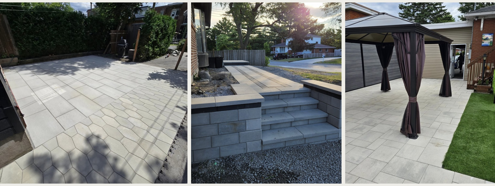
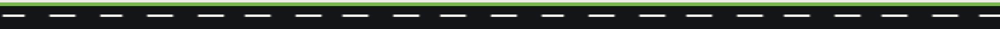
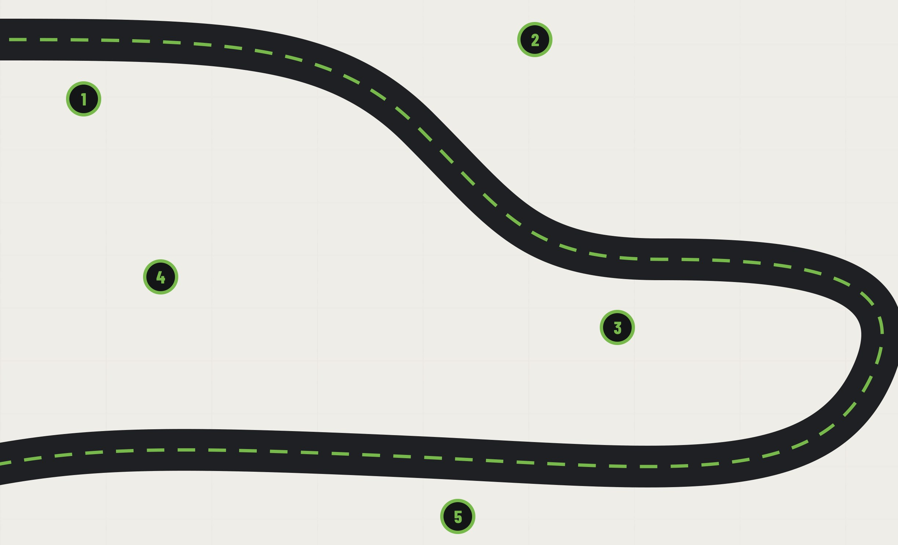
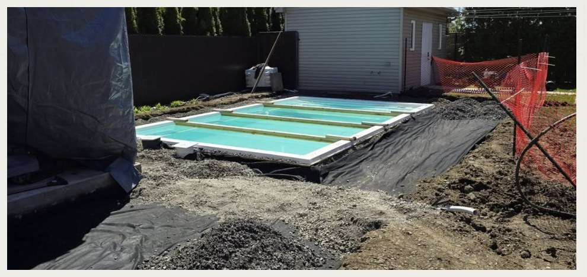
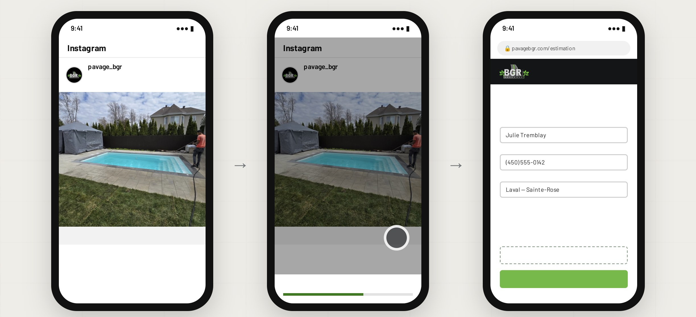
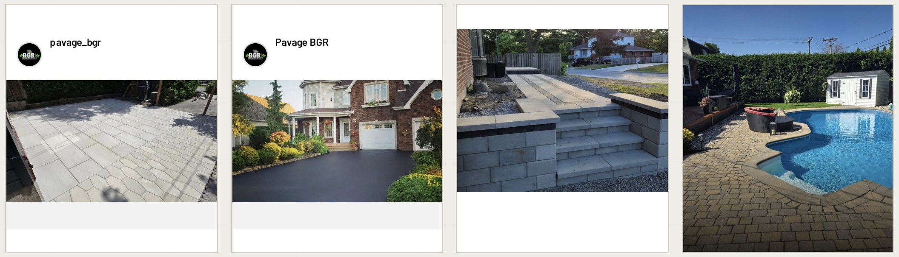
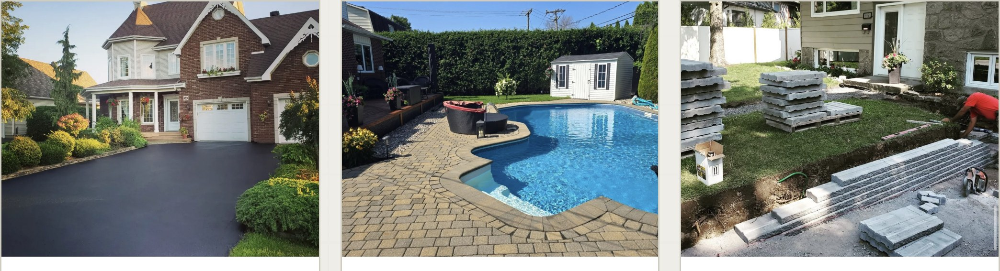
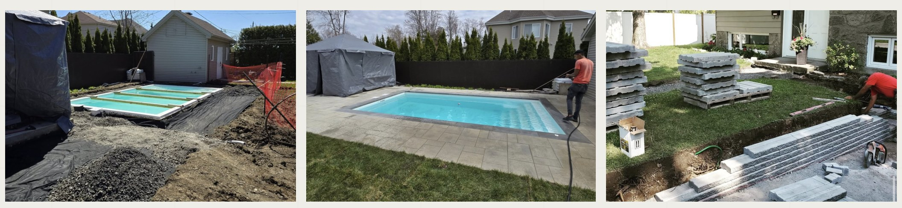
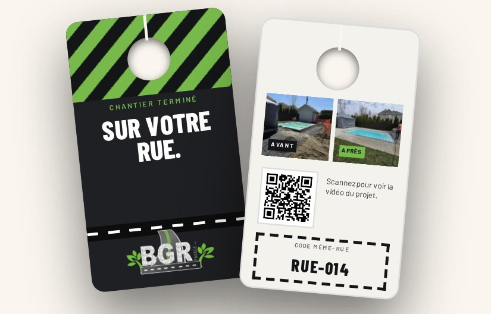

Asphaltage · Pavé-uni · Murets & marches · Contours de piscine — Laval
La stratégie carnet plein
Quinze ans de savoir-faire, déjà filmés. Un plan pour montrer les entrées finies de BGR à tout Laval — et remplir le calendrier 2027 avant la première neige.
Septembre 2026
Mandat oct. – déc.
TGS · 111 Chabanel Ouest, Montréal
L’occasionBGR × TGS
Vos chantiers sont déjà la pub.
Pavage BGR réalise le genre de travaux qui font ralentir les passants — entrées d’asphalte, allées et patios en pavé-uni, marches, murets avec drainage et contours de piscine en Permacon et Melville. Des artisans avec plus de quinze ans d’expérience, et un Instagram vérifié rempli de chantiers finis.
Aujourd’hui, ça rejoint surtout ceux qui vous suivent déjà. Le plan : le montrer aux propriétaires de Laval prêts à investir dans une entrée ou une cour — et en faire des demandes de soumission, adresse incluse.
Personne n’engage un paveur sur la foi d’une liste de prix. On engage celui dont on a déjà vu l’entrée.
Chaque chantier est une affiche.
Notre travail : que Laval le voie

Pavé-uni · Patio
Marches & muret
Cour arrière
Secteur
Laval et les quartiers environnants
Instagram
@pavage_bgr vérifié — des années de chantiers filmés
Savoir-faire
Artisans avec plus de 15 ans d’expérience, soumissions faites par des pros
Services
Asphalte, scellant, pavé-uni, marches, murets, contours de piscine
Préparé pour Pavage BGR — Stratégie carnet plein
02

01 — L’objectifBGR × TGS
L’objectif SMART
Un seul objectif derrière chaque vidéo, chaque campagne et chaque rapport.
L’objectif, en une ligne
Finir 2026 en force, remplir le calendrier du printemps 2027 avant la première neige, et relier chaque contrat signé à la campagne qui l’a amené.
Le plan en un coup d’œil
S
Spécifique — des propriétaires avec un projet, près de l’équipe
Des propriétaires partout à Laval avec une entrée fatiguée, une allée ou des marches qui ont bougé, ou une cour à finir pour l’été.
M
Mesurable — demandes, visites, contrats
Quatre chiffres clés : les demandes de soumission issues des campagnes, les visites planifiées, le coût par visite et les contrats signés — avec la valeur de chacun.
A
Atteignable — bâti sur ce qui existe
Un Instagram vérifié, des années de chantiers finis, des artisans avec plus de 15 ans d’expérience, des soumissions professionnelles et des matériaux haut de gamme déjà en place.
R
Réaliste — un seul projet vaut plus que le mois
Une seule entrée en pavé-uni ou un seul contour de piscine peut couvrir un mois complet de ce mandat — et chaque chantier fini vend le suivant dans la même rue.
T
Temporel — d’octobre à décembre
Trois mois, révisés chaque mois : finir la saison 2026 en force, puis réserver 2027 pendant que les concurrents hibernent.
Ce à quoi nous nous engageons. Le contenu, les campagnes, le suivi et les rapports, c’est nous. Ce qui se passe sur le chantier — les mesures, le prix, la signature — est mesuré, pas promis.
Filmer le chantier→Lancer 4 campagnes→Demande de soumission→Visite du chantier→Contrat signé
Préparé pour Pavage BGR — Stratégie carnet plein
03
02 — Le parcours clientBGR × TGS
Du fil d’actualité jusqu’à l’entrée
Une entrée, c’est une décision à cinq chiffres qu’on mûrit pendant toute une saison avant d’appeler. Le plan suit toute la route, pas un seul clic.

On le voit
Un dévoilement de 30 secondes — de l’entrée défoncée au pavé-uni fini — apparaît entre les publications d’amis.
On demande une soumission
On touche « Ma soumission » : adresse, type de projet, une photo de l’entrée. Envoyé en moins d’une minute.
C’est suivi
Chaque demande est reliée à la campagne, au placement et à la pub qui l’ont lancée.
La visite sur place
Vous mesurez, apportez des échantillons et donnez le prix. L’équipe fait ce qu’elle fait déjà le mieux.
La rue le remarque
Les voisins voient la nouvelle entrée chaque matin — et la prochaine demande de soumission vient d’à côté.

Excavation · Piscine 12×22
Votre méthode est votre avantage. La plupart des pubs de pavage, c’est une entrée qui brille et un numéro de téléphone. Excavation, géotextile, fondation compactée, drain jusqu’au garage — ces couches que personne ne voit justifient le prix, et aucun concurrent ne peut les inventer. On s’assure juste que Laval les voie.
Préparé pour Pavage BGR — Stratégie carnet plein
04
03 — De la pub à la soumissionBGR × TGS
Défiler, toucher, demander
Ce qu’un propriétaire de Laval voit, touche et remplit — en moins d’une minute — sur Instagram ou Facebook.

Accueil
Commandité
LE DÉVOILEMENT
Ma soumission
›
pavage_bgr Piscine en fibre de verre, margelle Permacon, pavés Melville — de l’excavation à la baignade. On réserve le printemps 2027 à Laval.
Accueil
Commandité
LE DÉVOILEMENT
Ma soumission
Ouverture de pavagebgr.com…
MENU
Votre soumission
Décrivez le projet — on vous rappelle pour la visite.
Nom
Téléphone
Ville
Projet
AsphaltePavé-uniMarches & muretsContour de piscine
Photo
+ Ajoutez une photo de votre entrée
Demander ma soumission
1Voir la pub
Un dévoilement de 30 secondes d’un vrai chantier BGR apparaît entre les publications d’amis et de la famille.
2Toucher le bouton
Un seul toucher ouvre votre site — pas de messages privés oubliés pendant que l’équipe est sur le chantier.
3Envoyer la demande
Une nouvelle page sur pavagebgr.com, suivie par le pixel Meta — adresse, projet et photo arrivent sur votre téléphone.
Même pub, quatre placements — une seule page de soumission

Fil Instagram
Commandité
HEXAGONE + PLANCHE
Ma soumission
›
Fil Facebook
Commandité
Scellez avant le sel
›
Facebook Marketplace
Marches et murets
Laval · Pavage BGR · Commandité
Stories Instagram
Votre cour, prête pour juin.
Ma soumission ›
Pub affichée→Toucher « Ma soumission »→Page de soumission→Demande envoyée→Attribuée à la pub
Préparé pour Pavage BGR — Stratégie carnet plein
05
The Golden Standard · Dans votre rueBGR × TGS
PREMIUM · EXCLUSIF À THE GOLDEN STANDARD · 4 000 $ / MOIS
Une entrée. Vingt portes.
Dès qu’une entrée BGR est terminée, toute la rue pense à la sienne. « Même rue, même équipe » transforme chaque chantier en invitation porte-à-porte — avec une vraie raison de réserver maintenant : l’équipe et la machinerie sont déjà sur place.
01
Chaque chantier, filmé
TGS filme l’excavation et le dévoilement. Le reel est en ligne le jour où l’équipe plie bagage — et le code QR de l’accroche-porte ouvre cette vidéo précise.
02
Vingt portes, le jour même
Les accroche-portes vont sur les portes de chaque côté et en face. Le voisin voit le résultat de sa fenêtre, et la preuve sur son téléphone.
03
Compté par code
Chaque accroche-porte a son propre code, à partir de RUE-001 — vous voyez exactement quelles rues ont donné des visites et des contrats signés.
La campagne derrière. L’une des quatre campagnes The Golden Standard cible un rayon autour de chaque chantier fini avec le reel de ce chantier — la rue le voit sur la porte et dans son fil. Le crédit même-rue est fixé par BGR ; les règles (une adresse par code, 30 jours) sont imprimées sur chaque accroche-porte. Les accroche-portes roulent jusqu’aux derniers chantiers de 2026 et reprennent au premier chantier du printemps.
Préparé pour Pavage BGR — Stratégie carnet plein
06
04 — Le public cibleBGR × TGS
À qui on s’adresse
Trois profils de propriétaires — chacun à une étape différente, dans la même rue.
Le coup d’œil de la façade
Vient d’acheter, ou vend d’ici un an ou deux. L’entrée est fissurée, délavée ou en gravier — et c’est la première chose qu’on voit.
Où le rejoindre : rayon Facebook et Instagram autour des chantiers, reels de dévoilement, « scellez avant le sel »
Le projet de cour arrière
Une piscine qui s’en vient, un patio pour le gazebo, une cour à finir pour l’été. Planifie l’hiver, réserve au printemps — si personne n’est passé avant.
Où le rejoindre : Reels et Stories Instagram, Marketplace, contenu matériaux, réservation printemps 2027
Le proprio pragmatique
Des marches qui ont bougé, un muret qui penche, de l’eau devant le garage. Pas besoin du plus beau chantier — juste un travail bien fait, une fois.
Où le rejoindre : fil Facebook, vidéos « construit en couches », reciblage des visiteurs du site

Ce qui compte pour eux
Une équipe qui arrive quand elle l’a dit
Connaître le prix — et ce qu’il y a sous les pavés
Un travail encore de niveau après dix hivers
Voir un chantier comme le leur avant d’appeler
Où on les rejoint
Fil, Reels et Stories Instagram
Fil Facebook et Marketplace, rayon autour de Laval
Un accroche-porte dans la rue de chaque chantier fini
Reciblage et audiences similaires des visiteurs du site
Pourquoi la vidéo fonctionne
Une photo d’entrée finie dit « beau travail. » Trente secondes d’excavation, de fondation, de compacteur et de dévoilement disent « celle-là sera encore droite dans dix hivers. » La première récolte un j’aime. La deuxième, une demande de soumission ce soir.
Préparé pour Pavage BGR — Stratégie carnet plein
07
05 — Le contenuBGR × TGS
Ce qu’on va créer
20 contenus par mois — 12 vidéos, 8 publications — filmés sur vos chantiers, sous-titrés en français et en anglais.

Construit en couches
Le dévoilement
Rencontrez l’équipe
Filmé sur vos chantiers — propriétaires, numéros civiques et plaques à l’écran seulement avec un consentement écrit et révocable.
Le dévoilement
4 / MOIS
De l’avant à l’après en trente secondes — la transformation qui fait qu’un voisin arrête de défiler.
Une entrée, du jour 1 à la finPiscine : du trou à la baignadePatio + gazebo
Construit en couches
4 / MOIS
Excavation, géotextile, fondation, compaction, drainage — ce qu’il y a sous les pavés, et pourquoi c’est ça que vous payez.
Pourquoi les entrées fissurentSous les pavésDes murets qui tiennent
Les matériaux, expliqués
3 / MOIS
Permacon, Melville, couleurs et motifs — pour que le choix parte de ce qu’ils verront dans l’entrée, pas d’un catalogue.
Hexagone ou planche ?Melville Gris ScandinaAsphalte ou pavé-uni
Rencontrez l’équipe
2 / MOIS
Les artisans derrière les coupes et les niveaux — quinze ans d’expérience, avec un visage.
15 ans dans chaque coupeEntretenir une entrée neuve
Prix & planification
4 / MOIS
Ce qui fait varier le prix, quand sceller, quand réserver — chaque contenu mène à la page de soumission.
Combien coûte une entréeSceller avant le selRéserver le printemps 2027
Même rue
3 / MOIS · GOLDEN STANDARD
Le crédit même-rue, la tournée des accroche-portes, les rues finies ce mois-ci. Avec le Standard, ces trois deviennent des dévoilements.
Même rue, même équipeDans la rueFini ce mois-ci
Préparé pour Pavage BGR — Stratégie carnet plein
08
06 — Le calendrier de contenu · Mois 1BGR × TGS
Octobre 2026
20 contenus — 12 vidéos, 8 publications — du lundi au vendredi. La barre de chaque semaine indique la campagne alimentée.
Le dévoilementConstruit en couchesMatériauxL’équipePrix & planificationMême rue · Golden Standard
LUNDIMARDIMERCREDIJEUDIVENDREDI
Semaine 1A · Même rue — Lancement · accroche-portes dans chaque rue terminéeVoisins de chaque chantier
1 oct.VIDÉO
Le dévoilement
Une entrée, du jour 1 à la fin
2 oct.VIDÉO
Même rue, même équipe
Le crédit même-rue, expliqué
Semaine 2B · Réservez avant le gel — Demandes · Instagram et Facebook vers votre page de soumissionFaçades · Pragmatiques
5 oct.VIDÉO
Pourquoi les entrées fissurent
Gel, fondation, drainage
6 oct.PUBLICATION
Sceller avant le sel
Carrousel : pourquoi sceller à l’automne
7 oct.VIDÉO
Rencontrez l’équipe
15 ans dans chaque coupe
8 oct.VIDÉO
Asphalte ou pavé-uni
Coût, look, durée de vie
9 oct.PUBLICATION
Dernières dates d’automne
Places restantes avant le gel
Semaine 3C · Cour 2027 — Demandes · contours de piscine et patios, Reels et MarketplaceProjets de cour
12 oct.
Action de grâce
Congé · aucune publication
13 oct.VIDÉO
Piscine, du début à la fin
Fibro 12×22, margelle Leno
14 oct.VIDÉO
Ce qu’il y a sous les pavés
Géotextile, fondation, compaction
15 oct.PUBLICATION
Choisir son pavé
Melville Gris Scandina et plus
16 oct.VIDÉO
Des murets qui tiennent
Permacon Pisa + drainage
Semaine 4D · Encore indécis — Reciblage · spectateurs, profil et visiteurs du siteLes trois
19 oct.VIDÉO
Marches et allée
Une entrée de maison refaite
20 oct.PUBLICATION
5 questions avant de paver
Questions et réponses
21 oct.VIDÉO
Dans la rue
La tournée des accroche-portes, filmée
22 oct.PUBLICATION
Combien coûte une entrée
Ce qui fait varier le prix
23 oct.VIDÉO
Patio + gazebo
Dévoilement de cour
Semaine 5La meilleure pub amplifiée — Les quatre en ligne · le budget suit les visitesLes trois
26 oct.VIDÉO
Réservez le printemps 2027
Dates de début prioritaires
27 oct.PUBLICATION
Fini ce mois-ci
Les rues qu’on a pavées
28 oct.PUBLICATION
Hexagone ou planche ?
Guide des motifs
29 oct.PUBLICATION
Avant la première neige
Entretenir une entrée neuve
30 oct.
Rapport mensuel
Résultats d’octobre et plan de novembre
Conçu pour les règles du Québec. Chaque contenu est vérifié avant sa mise en ligne : le numéro de licence RBQ partout où la Loi sur le bâtiment l’exige, des prix affichés avec ce qu’ils incluent, une date de fin sur chaque offre, les adresses et visages des propriétaires seulement avec consentement écrit, et une copie de chaque pub conservée au dossier.
Préparé pour Pavage BGR — Stratégie carnet plein
09
07 — Les campagnesBGR × TGS
Des campagnes bâties à partir du contenu
Chaque vidéo du calendrier sert aussi de pub sur Instagram ou Facebook. Ce qui performe reçoit le budget, et chaque clic mène à votre page de soumission — le coût de chaque visite est suivi dès le premier jour.
A · Golden Standard
Même rue
Instagram et Facebook · rayon autour de chaque chantier fini
Public : la rue de chaque chantier
Le reel du chantier, montré aux pâtés de maisons autour la semaine où les accroche-portes sont posés — la porte et le fil racontent la même histoire.
Mesuré par : codes utilisés, visites par rue
B · Vedette · Deux forfaits
Réservez avant le gel
Fils Instagram et Facebook
Public : Façades · Pragmatiques
Pubs de dévoilement et de méthode avec un bouton « Ma soumission » qui ouvre votre page — les demandes arrivent sur votre téléphone, avec adresse et photo.
Mesuré par : demandes, coût par visite
C · Cour 2027
Votre cour, prête pour juin
Reels, Stories et Marketplace
Public : projets de cour
Contours de piscine, patios et murets — matériaux, motifs et chantier complet, menant à une visite au printemps, pas à un argumentaire de vente.
Mesuré par : visites, coût par visite
D · Reciblage
Encore indécis
Instagram et Facebook · tous les placements
Public : tous ceux qui ont interagi
Ceux qui ont regardé, visité le profil ou ouvert la page de soumission sans l’envoyer — on leur montre l’équipe, les couches et le guide de prix, puis l’invitation.
Mesuré par : demandes, coût par contrat signé
Trois mois, trois priorités
OCTOBRE
Finir la saison
Page de soumission et pixel, premiers tournages sur de vrais chantiers, derniers contrats d’automne et scellant — et la base de référence pour tout mesurer.
NOVEMBRE
Le printemps se réserve
Réservation hâtive 2027 : mesurer et chiffrer avant la neige, réserver une date de début prioritaire. Le budget va à la meilleure campagne.
DÉCEMBRE
Planifier la cour
Piscines, patios et murets se dessinent l’hiver — le reciblage porte les Fêtes, et les visites de mars sont réservées avant janvier.
Ce que vous voyez chaque mois
DEMANDES DE SOUMISSION
—
base établie en octobre
VISITES PLANIFIÉES
— %
des demandes, selon votre horaire
COÛT PAR VISITE
— $
par campagne et placement
CONTRATS SIGNÉS
— $
valeur issue des campagnes
Les pubs sont déjà payées. Le budget publicitaire est inclus dans votre forfait mensuel — pas de facture Meta séparée, pas de recharge surprise. Vous restez propriétaire de chaque page, compte et séquence vidéo.
Préparé pour Pavage BGR — Stratégie carnet plein
10
08 — Le mandatBGR × TGS
Deux façons de grandir
Les mêmes 20 contenus par mois, budget pub inclus dans les deux. La différence : la portée.
STANDARD
3 000 $/ MOIS
20 CONTENUS · 1 CAMPAGNE VEDETTE
● BUDGET PUB INCLUS
Tout ce qu’un propriétaire doit voir — et une campagne pour le montrer aux bonnes personnes.
20 contenus par mois — 12 vidéos, 8 publications
Sous-titres en français et en anglais, registre québécois
1 campagne vedette par mois — demandes de soumission
Pixel Meta sur la page de soumission, chaque demande suivie
Chaque pub vérifiée selon les règles québécoises
Rapport mensuel
Campagnes supplémentaires, reciblage et Même rue
THE GOLDEN STANDARD · RECOMMANDÉ
4 000 $/ MOIS
20 CONTENUS · 4 CAMPAGNES · MÊME RUE
● BUDGET PUB INCLUS
Tout le Standard — plus de portée en ligne et une invitation sur chaque porte de chaque rue que vous pavez.
20 contenus par mois — 12 vidéos, 8 publications
Sous-titres en français et en anglais, registre québécois
1 campagne vedette par mois — demandes de soumission
Pixel Meta sur la page de soumission, chaque demande suivie
Chaque pub vérifiée selon les règles québécoises
Rapport mensuel
PLUS
3 campagnes de plus — Même rue, Cour 2027, reciblage
Audiences similaires et revue hebdo des demandes
Accroche-portes Même rue à chaque chantier fini ↓

EXCLUSIF À THE GOLDEN STANDARD · 4 000 $ / MOIS
Même rue, même équipe
Vingt accroche-portes dans la rue de chaque chantier fini — avant-après au verso, un code QR vers le reel du chantier, et un crédit même-rue parce que l’équipe est déjà là. Une de vos quatre campagnes montre le même reel aux rues voisines.
Accroche-portes conçus, imprimés et posés par TGS
Une campagne dédiée autour de chaque rue terminée
Chaque code suivi, de la porte au contrat
30
JOURS
Clause de satisfaction · Les deux forfaits
Pas satisfait après le premier mois ? Vous partez.
Si le premier mois ne répond pas à vos besoins, mettez fin à l’un ou l’autre forfait par avis écrit avant le début du deuxième mois — sans pénalité ni frais, et les mois deux et trois ne sont jamais facturés. Vous payez seulement le mois livré, et vous gardez chaque vidéo, publication et compte qu’on a créés.
Préparé pour Pavage BGR — Stratégie carnet plein
11
09 — La suiteBGR × TGS
Les prochaines étapes
Six étapes jusqu’au premier contrat relié à une campagne.
01
Choisir le forfait, partager la base de référence
Standard ou The Golden Standard. Puis, à peu près combien de demandes de soumission vous recevez par mois, combien vous en signez, la valeur moyenne d’un chantier, et d’où elles viennent aujourd’hui.
02
Donner les accès
Meta Business Manager, le compte publicitaire, les pages Instagram et Facebook, et pavagebgr.com pour la nouvelle page de soumission et le pixel.
03
Confirmer les offres
Votre numéro de licence RBQ, les conditions de réservation hâtive du printemps 2027, la garantie du scellant (2 ans, comme publié en 2021), le montant du crédit même-rue — et si les services d’hiver sont au menu.
04
Nommer votre personne-ressource
Qui rappelle les demandes et approuve le contenu chaque semaine. Le budget pub est déjà couvert par votre forfait.
05
Planifier les premiers tournages
Les deux prochains chantiers à l’horaire — jour d’excavation et jour du dévoilement — avec l’équipe, et des propriétaires heureux d’être filmés, avec consentement écrit.
06
Approuver le calendrier d’octobre
Validez le mix pour que la production et les premières campagnes démarrent le 1er.
On se déplace sur le chantier. Les tournages suivent l’horaire de votre équipe — jour d’excavation et jour du dévoilement — pour que personne n’attende la caméra. Laval est à quelques minutes de notre studio sur Chabanel.